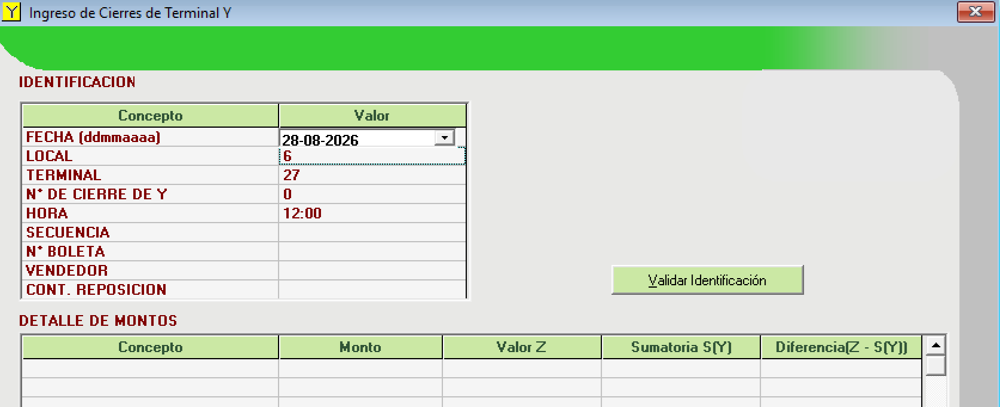
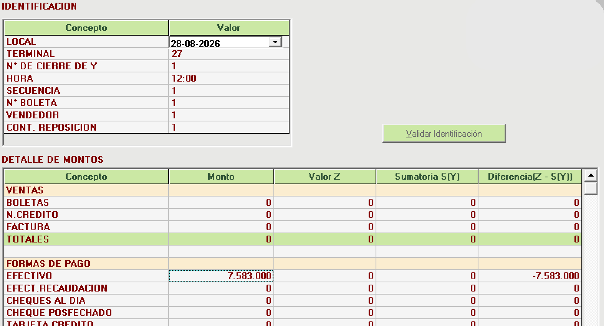
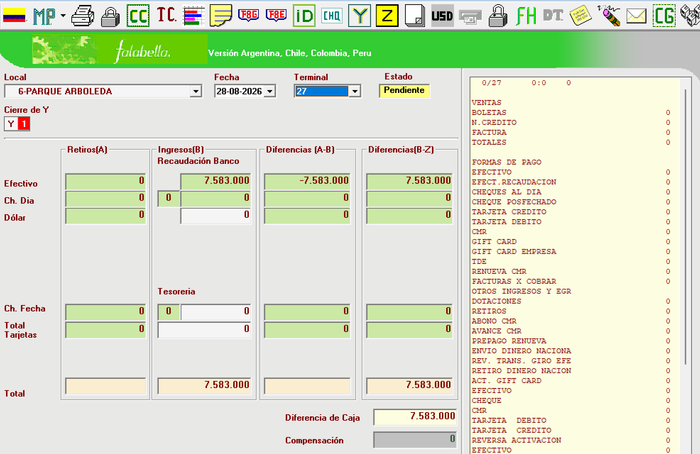
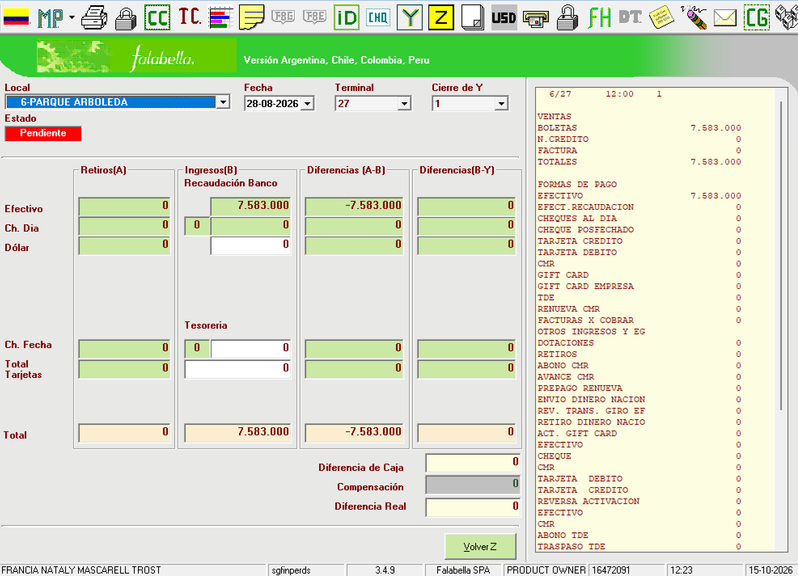
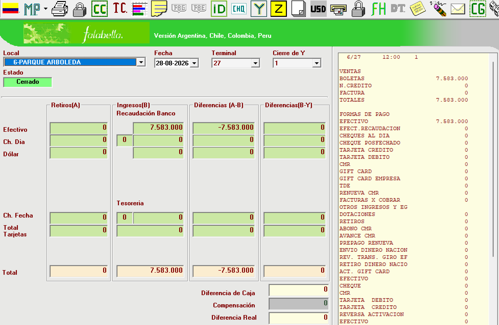

RESULTADO OK La Y 1 del local 6, terminal 27, fecha de venta 28-08-2026 quedó Cerrada con Diferencia Real 0.
Probar el camino feliz de la lógica de la Y desde el aplicativo: Y manual (Form19Y) → carga de sobres (Form133) → F8 por cierre Y (Form3Y) con Diferencia Real 0 → Cerrar Terminal. Reemplaza la prueba del 14-10.
| Sobre | Monto | Dif. | Recuento | Fecha venta | Y |
|---|---|---|---|---|---|
| 3404295622 | 846.000 | 0 | 123 | 20260828 | 1 |
| 3476295623 | 4.000.000 | 0 | 123 | 20260828 | 1 |
| 3482295624 | 2.737.000 | 0 | 123 | 20260828 | 1 |
| Total | 7.583.000 |
Archivo: docs/sql/FSCC-12901_PROC_Y/prueba_manual_Y/PRD-LIST-TEST-V2.xlsx.
Form19Y)Antes: F8 abierta con fecha 28-08-2026, local 6, terminal 27 (Form19Y.Oklt valida la terminal con la fecha de la F8 abierta).
Identificación: fecha 28-08-2026, local 6, terminal 27, N° de Y 0, hora 12:00, secuencia 1, boleta 1, vendedor 1, cont. reposición 1. Validar Identificación → el N° de Y pasa a 1 (máximo del día + 1).

EFECTIVO 7.583.000 y BOLETAS 7.583.000 (TOTALES de ventas = formas de pago); el resto en 0. Aceptar → Sí. La columna «Diferencia (Z − S(Y))» es informativa: en FACO no hay Z ingresada.

Form133)Recaudador, Excel, desplegar y Cargar Archivo: 3 filas F8/EFE en vta_FACOprd con prv_cierrey = 1; reabre la Z. En la F8 de la Z aparece «Y 1» y la recaudación del banco 7.583.000; la diferencia de la Z (7.583.000) es esperada en FACO.

Form3Y)Recaudación banco 7.583.000 = efectivo Y 7.583.000; Diferencias (B−Y) 0; Diferencia de Caja 0, Compensación 0, Diferencia Real 0; estado Pendiente.

Con la F8 de la Y activa, primer candado del toolbar (junto a la impresora; Key Cerrar, tooltip «Cerrar Terminal» → Form3Y.CierraTerminal) → Sí. El otro candado (cerca de «FH») es otra opción.

| Control | Esperado | Obtenido |
|---|---|---|
| N° de Y asignado al validar | 1 | 1 |
| Sobres cargados | 3 (7.583.000) | 3 (7.583.000) |
| Diferencias (B−Y) efectivo | 0 | 0 |
| Diferencia Real de la Y | 0 | 0 |
| Estado de la Y tras Cerrar Terminal | Cerrado | Cerrado |
| Z de la terminal | Pendiente, sin tocar | Pendiente |
Form133 detecta duplicados por número de sobre + fecha de venta (sin local): para repetir con el mismo Excel hay que borrar antes los sobres.La Y 1 cerrada, los 3 sobres y la fila de la Z (estado 0, «CARGA MANUAL DE SOBRES») quedan en la base de test. Para repetir en la misma caja: P9_limpiar.sql (lo ejecuta el usuario). Guía y scripts en docs/sql/FSCC-12901_PROC_Y/prueba_manual_Y/.